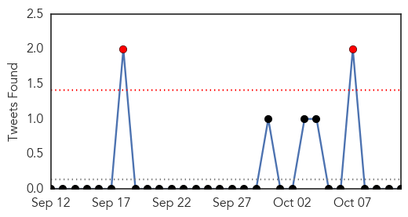

30 Day Trends
Web: 4 alerts, 13 warnings
Twitter: 2 alerts, 0 warnings
Top Articles:
- 0.999
- Time for flu fighters to get armed with shots
- 0.996
- Idaho reports first flu deaths of 2014
- 0.993
- Likely more enterovirus in Tennessee than the 2 reported
- 0.992
- Michigan toddler dies from enterovirus D68
- 0.988
- Farsnews
- 0.964
- As Ebola fears grow, memories of 1918 Spanish Flu that killed hundreds of Albert
- 0.951
- Texas health department reports increase in cases of flu
- 0.885
- Computerized surveillance system quickly detects disease outbreaks among preschoolers
- 0.855
- Do it yourself flu vaccine Study shows it works
Top Tweets:
-
No tweets found for Oct 11, 2014
Web/News Articles

Tweets
Article Locations

Article Confidences